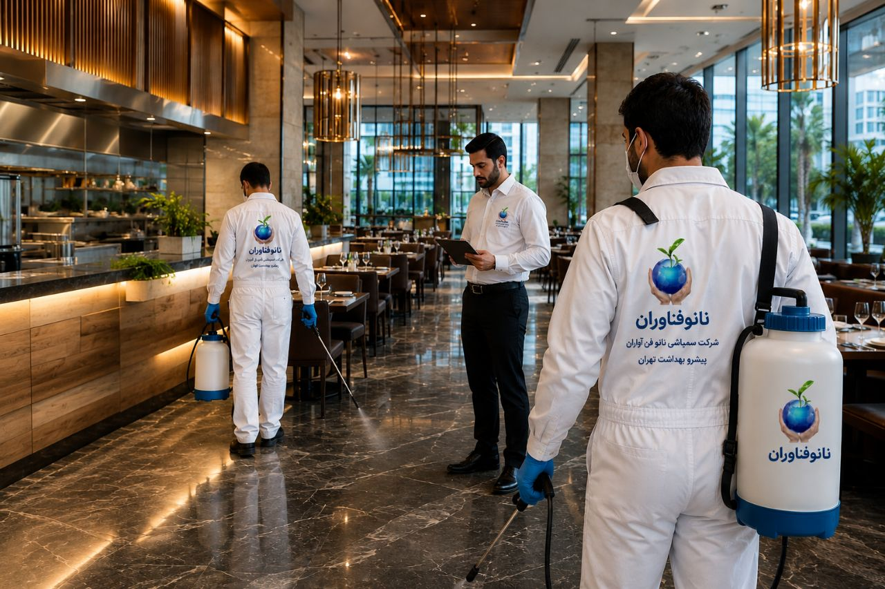
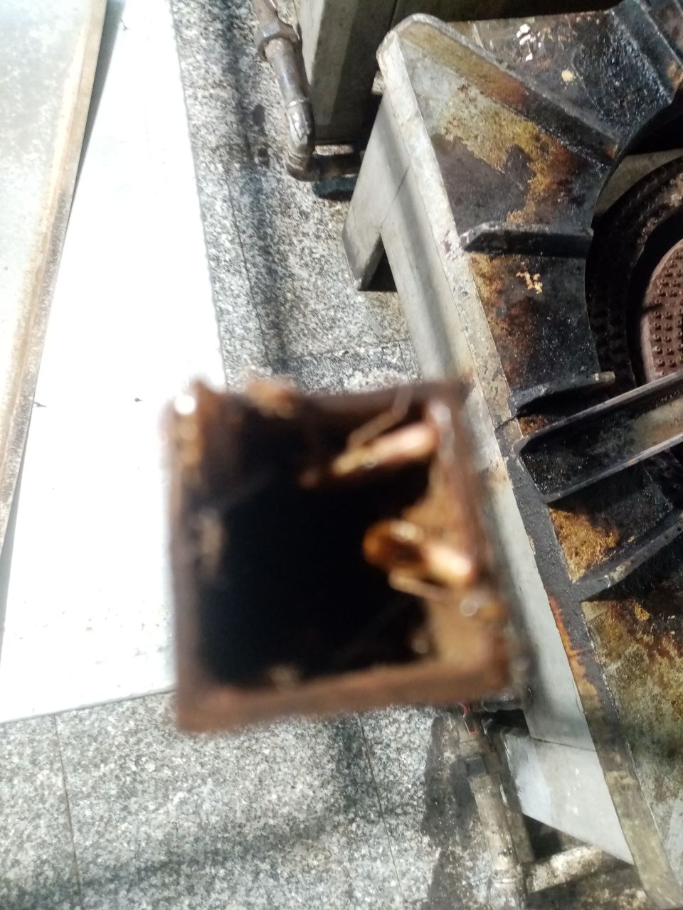
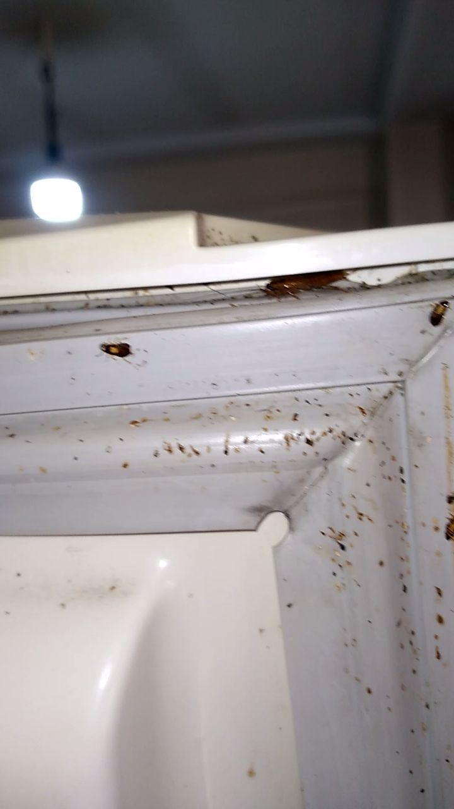
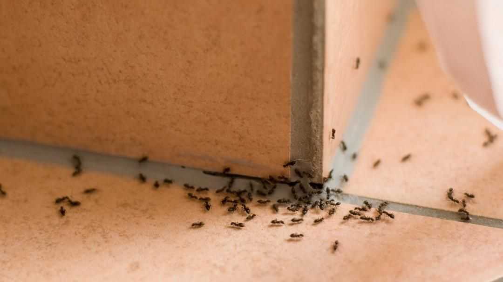
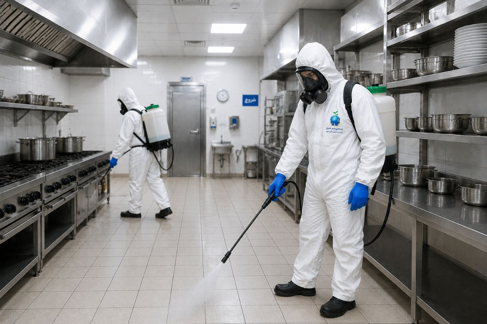

صنعت رستورانداری و تهیه غذا، یکی از حساسترین و پرچالشترین صنایع در جهان است. در این صنعت، بهداشت و ایمنی مواد غذایی نهتنها یک الزام قانونی، بلکه اساس بقا و موفقیت یک کسبوکار محسوب میشود. هر ساله، میلیونها نفر در سراسر جهان به دلیل مصرف مواد غذایی آلوده بیمار میشوند و هزاران کسبوکار غذایی به دلیل عدم رعایت استانداردهای بهداشتی تعطیل میشوند.
در این میان، کنترل آفات در محیطهای تهیه و توزیع غذا، یکی از حیاتیترین مؤلفههای بهداشتی است. یک رستوران، فستفود، کافه یا هر مرکز تهیه غذایی که با آفات دست و پنجه نرم میکند، نهتنها سلامت مشتریان خود را به خطر میاندازد، بلکه اعتبار و سرمایه سالها تلاش خود را یکشبه از دست میدهد.
تصور کنید یک مشتری در رستوران شما، در حالی که مشغول غذا خوردن است، ناگهان یک سوسک یا مگس را در نزدیکی خود ببیند. این صحنه نهتنها اشتهای او را از بین میبرد، بلکه در شبکههای اجتماعی منتشر میشود و تا مدتها بر ذهنیت افراد نسبت به کسبوکار شما تأثیر منفی میگذارد.
در این مقاله جامع از شرکت سمپاشی نانوفناوران بهداشت تهران، به بررسی کامل چالشهای کنترل آفات در رستورانها، فستفودها، کافهها و مراکز تهیه غذا میپردازیم و راهکارهای تخصصی برای حفظ بالاترین استانداردهای بهداشتی را ارائه میدهیم.
رستورانها و مراکز تهیه غذا، مستقیماً با سلامت عمومی مردم در ارتباط هستند. وجود آفات در این محیطها میتواند باعث انتقال بیماریهای خطرناکی مانند سالمونلا، ایکولی، هپاتیت A و سایر عفونتهای گوارشی شود. یک رستوران آلوده، میتواند به سرعت به منبع یک بیماریزا تبدیل شود و دهها نفر را بیمار کند.
در ایران، سازمان غذا و دارو، وزارت بهداشت و مراکز نظارتی محلی، به طور مرتب از رستورانها و مراکز تهیه غذا بازرسی میکنند. هرگونه مشاهده آفات در این بازرسیها، میتواند منجر به جریمههای سنگین، تعطیلی موقت یا حتی لغو پروانه کسب شود.
در عصر شبکههای اجتماعی و پلتفرمهای نقد و بررسی مانند گوگل مپس، اسنپفود و دیگر پلتفرمها، یک نظر منفی درباره مشاهده آفات در رستوران، میتواند به سرعت گسترش یابد و تأثیر جبرانناپذیری بر اعتبار برند بگذارد. طبق تحقیقات، بیش از ۸۰٪ از مشتریان قبل از انتخاب یک رستوران، نظرات دیگران را بررسی میکنند.
یک رستوران آلوده به آفات، به سرعت مشتریان خود را از دست میدهد. کاهش تعداد مشتریان، لغو رزروها، هزینههای اضافی برای سمپاشی اضطراری و جبران خسارت، همگی بر سودآوری کسبوکار تأثیر منفی میگذارند.
صاحبان رستورانها و مراکز تهیه غذا، مسئولیت سنگینی در قبال سلامت جامعه دارند. رعایت استانداردهای بهداشتی و کنترل آفات، نهتنها یک الزام قانونی، بلکه یک تعهد اخلاقی و اجتماعی است.
سوسکها یکی از رایجترین و خطرناکترین آفات در محیطهای تهیه غذا هستند. آنها به راحتی از طریق مواد اولیه، بستهبندیها، کارتنها و حتی لباس کارکنان وارد رستوران میشوند. سوسکها ناقل باکتریهای بیماریزا مانند سالمونلا، ایکولی و استافیلوکوک هستند و میتوانند مواد غذایی را آلوده کنند.
سوسک آلمانی (سوسک ریز کابینتی): کوچکترین و رایجترین سوسک در رستورانها که در محیطهای گرم و مرطوب مانند پشت یخچالها، کابینتها و وسایل پخت و پز زندگی میکند.

سوسک فاضلاب (آمریکایی): بزرگترین سوسک که از طریق لولههای فاضلاب و سیستمهای آبرسانی وارد رستوران میشود.
سوسک شرقی: گونهای مقاوم که در محیطهای خنک و مرطوب مانند زیرزمینها و انبارها زندگی میکند.

مگسها یکی از مهمترین ناقلین بیماریها در محیطهای غذایی هستند. آنها با نشستن روی زبالهها، مواد فاسد و سپس روی مواد غذایی، باکتریها و ویروسها را منتقل میکنند.
مگس خانگی: رایجترین مگس در رستورانها که از مواد غذایی و زبالهها تغذیه میکند.
مگس میوه (سرکهمگس): مگسهای بسیار کوچکی که به میوههای رسیده، آب میوهها و مواد تخمیرشده جذب میشوند.
مگس لاشهخوار: مگسهای بزرگتری که به گوشت، ماهی و مواد پروتئینی در حال فساد جذب میشوند.
موشها در رستورانها و مراکز تهیه غذا، یکی از بدترین سناریوهای ممکن هستند. آنها با جویدن بستهبندیها، سیمهای برق و لولهها، خسارتهای مالی سنگینی ایجاد میکنند و ناقل بیماریهای خطرناکی مانند هانتاویروس، سالمونلا و طاعون هستند. فضولات و ادرار موشها میتواند مواد غذایی را آلوده کند و خطر مسمومیت غذایی را به شدت افزایش دهد.
مورچهها به دلیل جستجوی غذا، به راحتی وارد آشپزخانهها و انبارهای مواد غذایی میشوند. آنها میتوانند به بستهبندیها نفوذ کنند و مواد غذایی را آلوده سازند.

حشرات پروازی مانند پشهها، زنبورها و پروانههای انباری، میتوانند در رستورانها و فضاهای باز مشکلساز شوند. پشهها ناقل بیماریها هستند، زنبورها میتوانند مشتریان را نیش بزنند و پروانههای انباری به مواد غذایی خشک مانند آرد، برنج و ادویهجات آسیب میرسانند.
در انبارهای مواد غذایی رستورانها، آفات انباری میتوانند به محصولات خشک مانند آرد، برنج، حبوبات، ادویهجات و غلات حمله کنند و آنها را غیرقابل مصرف سازند.
در فضاهای استراحت کارکنان و خوابگاهها، ساسها میتوانند ایجاد مزاحمت کنند و باعث کاهش بهرهوری و رضایت کارکنان شوند.
رستورانها و مراکز تهیه غذا، با مواد غذایی در تماس مستقیم هستند. استفاده از سموم در این محیطها باید با نهایت دقت و با رعایت استانداردهای سختگیرانه انجام شود. سموم باید کاملاً تأییدشده برای استفاده در محیطهای غذایی باشند و هیچگونه خطری برای سلامت مشتریان و کارکنان ایجاد نکنند.
برخلاف بسیاری از محیطها، رستورانها و کافهها معمولاً در تمام ساعات روز فعال هستند. سمپاشی باید به گونهای برنامهریزی شود که کمترین اختلال را در فعالیت کسبوکار ایجاد کند و مشتریان در معرض سموم قرار نگیرند.
رستورانها دارای فضاهای متنوعی مانند آشپزخانه، سالن غذاخوری، انبار مواد غذایی، سردخانه، فریزر، سرویسهای بهداشتی، فضای باز (در صورت وجود) و فضاهای استراحت کارکنان هستند که هر کدام نیاز به روشهای کنترل خاص خود دارند.
در آشپزخانههای صنعتی، پشت تجهیزات سنگین مانند یخچالها، فرهای صنعتی، هودها و کابینتها، نقاطی هستند که معمولاً به سختی قابل دسترس هستند و میتوانند محل مناسبی برای زندگی و تکثیر آفات باشند.
در رستورانها، سموم باید بیبو یا با بوی بسیار ملایم باشند تا بر کیفیت و عطر غذاها تأثیر نگذارند. همچنین سموم باید فاقد هرگونه مواد مضر برای انسان باشند.
سمپاشی رستورانها باید در زمانهایی انجام شود که کمترین تأثیر بر فعالیت کسبوکار داشته باشد. معمولاً سمپاشی پس از ساعات کاری یا در روزهای تعطیل انجام میشود.
کارشناسان ما با بررسی کامل رستوران، نقاط حساس، نوع آفات، میزان آلودگی و مسیرهای ورود را شناسایی میکنند. این بازرسی شامل موارد زیر است:
بر اساس نتایج بازرسی، یک برنامه جامع برای سمپاشی رستوران تدوین میشود که شامل:
قبل از شروع سمپاشی، تمام مواد غذایی، ظروف، تجهیزات پخت و پز و وسایل آشپزخانه باید پوشانده شوند یا از محیط خارج گردند تا هیچگونه تماسی با سموم نداشته باشند.
آشپزخانه قلب هر رستورانی است و باید با دقت بالا سمپاشی شود:

سالن غذاخوری با استفاده از روشهای ایمن و بیخطر سمپاشی میشود تا کمترین مزاحمت برای مشتریان ایجاد شود.
انبارهای مواد غذایی، سردخانه، فریزر و انبارها با روشهای تخصصی سمپاشی میشوند تا آفات انباری و جوندگان کنترل شوند.
در صورت وجود فضای باز، محوطه با روشهای مناسب برای کنترل پشهها، مگسها و سایر حشرات پروازی سمپاشی میشود.
نصب تلههای چسبنده، تلههای نوری و موانع فیزیکی برای جلوگیری از ورود مجدد آفات.
پس از اتمام عملیات، کارشناسان ما بازدید مجدد انجام میدهند تا از موفقیت سمپاشی اطمینان حاصل کنند و در صورت نیاز، اقدامات تکمیلی انجام دهند.
سیستم HACCP (تحلیل خطر و نقاط کنترل بحرانی) یکی از مهمترین استانداردهای جهانی برای کنترل ایمنی مواد غذایی است. در این سیستم، کنترل آفات به عنوان یک نقطه کنترل بحرانی شناسایی شده است و رستورانها موظف به اجرای برنامههای منظم کنترل آفات هستند.
سازمان غذا و داروی آمریکا (FDA) و سازمان بهداشت جهانی (WHO)، دستورالعملهای مشخصی برای کنترل آفات در مراکز تهیه و توزیع غذا ارائه دادهاند که شامل موارد زیر است:
هزینه سمپاشی رستوران به عوامل زیر بستگی دارد. برای دریافت مشاوره رایگان و استعلام دقیق هزینه، با کارشناسان ما تماس بگیرید:
| عامل | تأثیر بر هزینه |
|---|---|
| مساحت رستوران | هرچه متراژ بزرگتر باشد، هزینه بیشتر است |
| نوع رستوران | رستورانهای صنعتی و بزرگ نیاز به عملیات گستردهتر دارند |
| شدت آلودگی | آلودگی شدید نیاز به عملیات بیشتر و زمانبرتری دارد |
| نوع آفات | برخی آفات نیاز به روشهای خاص و گرانتر دارند |
| تعداد جلسات | معمولاً یک جلسه کافی است، اما در موارد شدید ممکن است نیاز به بازدید مجدد باشد |
توصیه میشود رستورانها حداقل هر فصل (۴ بار در سال) سمپاشی شوند. رستورانهای واقع در مناطق گرمسیر یا دارای رطوبت بالا ممکن است نیاز به سمپاشی ماهانه داشته باشند. همچنین پس از هرگونه مشاهده آفات، بلافاصله باید اقدام شود.
خیر، سموم استفادهشده توسط شرکت نانوفناوران با رعایت کامل استانداردهای بهداشتی انتخاب میشوند و برای انسان بیخطر هستند. در هنگام سمپاشی، تمام مواد غذایی و تجهیزات پوشانده میشوند و پس از تهویه کامل، محیط برای حضور افراد ایمن میگردد.
معمولاً ۴ تا ۶ ساعت پس از سمپاشی، رستوران برای فعالیت مجدد ایمن است. کارشناسان ما زمان دقیق را به شما اعلام میکنند.
توصیه میشود رستوران در زمان سمپاشی تعطیل باشد تا بهترین نتیجه حاصل شود و ایمنی کامل رعایت گردد. در صورت ضرورت، سمپاشی میتواند پس از ساعات کاری انجام شود.
بهترین زمان برای سمپاشی رستوران، پس از ساعات کاری یا در روزهای تعطیل است. همچنین اوایل بهار و اوایل پاییز، بهترین فصول برای سمپاشی رستورانها هستند.
خیر، سموم استفادهشده توسط شرکت نانوفناوران بیبو بوده و هیچگونه تأثیری بر طعم و کیفیت غذا ندارند. تمام مواد غذایی و تجهیزات نیز در زمان سمپاشی به طور کامل پوشانده میشوند.
رستورانها، فستفودها، کافهها و مراکز تهیه غذا، قلب صنعت مهماننوازی و تغذیه جامعه هستند. حفظ بهداشت و ایمنی در این محیطها، نهتنها یک الزام قانونی، بلکه یک مسئولیت اخلاقی و اجتماعی است. کنترل آفات در این محیطها، یکی از مهمترین مؤلفههای بهداشتی است که میتواند تفاوت بین یک کسبوکار موفق و یک کسبوکار شکستخورده را رقم بزند.
شرکت سمپاشی نانوفناوران بهداشت تهران با بیش از یک دهه تجربه در زمینه سمپاشی رستورانها، کافهها و مراکز تهیه غذا، آماده ارائه خدمات تخصصی و تضمینی به شماست. تیم کارشناسان ما با شناسایی دقیق نوع آفات، استفاده از سموم استاندارد و ایمن، و رعایت کامل نکات ایمنی، محیطی امن، بهداشتی و عاری از آفات را برای کسبوکار شما به ارمغان میآورند.
🚀 همین حالا اقدام کنید:
📞 تماس فوری: ۰۹۱۲۰۷۰۵۷۴۶
💬 درخواست مشاوره رایگان: از طریق واتساپ یا ایتا
🔗 مشاهده سایر خدمات: کنترل آفات مسکونی